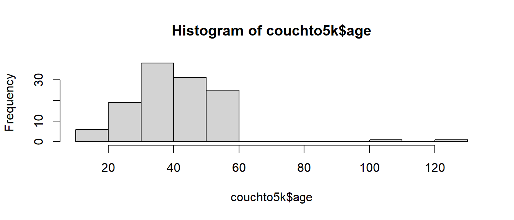
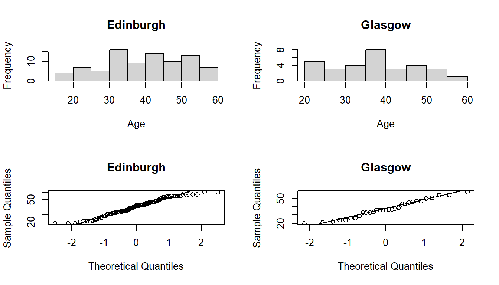
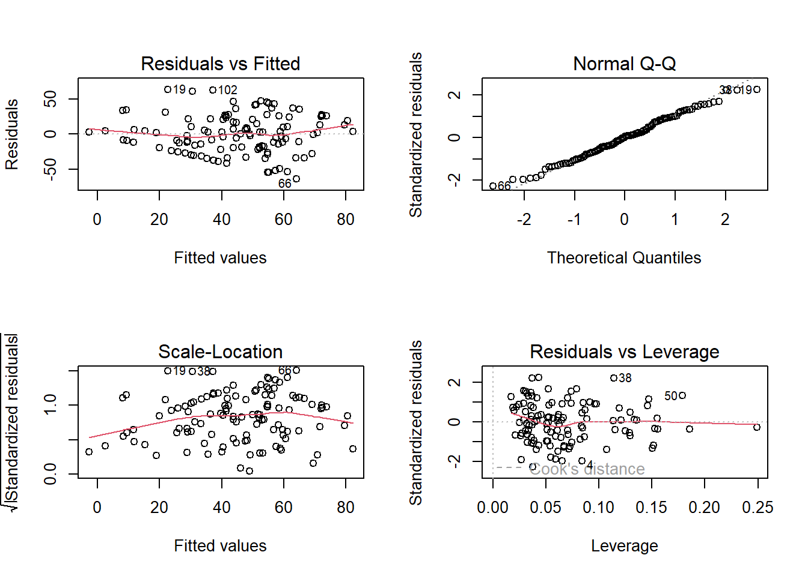

Couch to 5k is an NHS-sponsored fitness programme which lasts 9 weeks, taking participants from a gentle start up to a half-hour run.
The NHS wants to research some of the potential impact this programme has on wellbeing. They have conducted a small study of 121 people in 2 cities (Edinburgh and Glasgow), all of whom started the Couch to 5k programme, across the course of a year.
The researchers’ interests are two-fold: They are interested in the effects of taking the programme on psychological wellbeing, and also in the psychological factors that make people continue on the programme.
Methods
At Week 0, all participants completed a questionnaire measuring the psychometric factors of accountability and self-motivation.
Upon either completing the programme (Week 9) or dropping out (< Week 9), participants completed a questionnaire which included a measure of their self-reported happiness, and a “health” measure derived from a number of physiological tests. Researchers also recorded the season in which participants started the programme, as evidence from previous research suggests that the probability of completing the couch to 5k programme varies substantially across the year.
Please note that Couch to 5k is a real programme, but the data you will be analysing comes from our febrile minds.
Data Dictionary:
Column
Content
pptID
random ID code for participant
age
age in years
accountability
psychometric measure of accountability (or ‘responsibility’) (Sum of 5 questions, each scored 1-7).
selfmot
psychometric measure of self-motivation (Sum of 5 questions, each scored 1-7)
health
multi-test health measure (0-100)
happiness
simple happiness scale (0-100)
season
season of the year participants were interviewed in
city
city participant was recruited in
week_stopped
week of programme participant stopped in (week 9 = completed the programme)
Clean and describe
Have a look at the data. Check for impossible values and deal with these in an appropriate manner. Describe the data, either in words or using suitable graphs (or a combination). Remember to detail the decisions you have made.
Hints:
to clean data, go through each variable in turn. If numeric, what is the min and max? If categorical, what are the possible levels?
to describe data, you might want to use tables and plots, or you might find describing in text can work too.
There’s no right way to deal with missing values.
one option is to cross-tabulate the reasons for missingness, and then remove them from the dataset at this point. This means all your analyses are conducted on the same set of “complete cases”. This can be the neat and tidy option, but if some variables have lots of missingness, you might end up needlessly limiting some of your analyses in terms of statistical power.
another option is to leave all missing values in the dataset and let them be dealt with by each of your model(s) and test(s). The downside of this is that different tests end up being performed on different subsets of data, making it harder to describe (it also means you need to be very careful with model comparisons)
There’s no right way to deal with outliers.
Some fields of research will identify at the outset any observations that are outlying by looking at each variable individually. These they will then remove, or scale back (6WalkThrough#outliers) prior to any analysis. This should really only be done if you are sure that these observations are outlying because of either a) measurement error or b) not belonging to the target population of interest. If the outlyingness could well simply be natural variation in the variable, keep it in. You can always then examine its influence on subsequent analyses!
age is an integer variable, shouldn’t have negative values by definition of variable. There are a couple of values \(\geq 100\), which we should probably either exclude, or at the very least mention in our writing.
summary(couchto5k$age)
Min. 1st Qu. Median Mean 3rd Qu. Max.
18.00 32.00 39.00 40.62 48.00 129.00
hist(couchto5k$age)

accountability and selfmot are both integer variables should both be \(5 \leq x \leq 35\) - by definition
We can see that accountability looks to be okay, but selfmot has a minimum value of -99, which we can’t have.
health happiness
Min. :35.00 Min. : 0.00
1st Qu.:50.00 1st Qu.: 17.00
Median :57.00 Median : 44.00
Mean :56.99 Mean : 44.69
3rd Qu.:64.00 3rd Qu.: 69.00
Max. :82.00 Max. :100.00
season should be one of “spring”, “summer”, “autumn”, “winter”
We have some mis-spellings of “autumn” as “autunm” which we should fix
(i’m adding in the useNA="always" bit just so i can also see if there are any that are already missing)
week_stopped is an integer variable and should be \(1 \leq x \leq 9\) - by definition of variable
We have an entry of 12, which we can’t have. Could this be interpreted as someone doing the programme for an extra 5 weeks beyond the 9? In which case could we turn that 12 into a 9? It’s just a possible that it’s a typo, and it’s supposed to be a 1. This ambiguity is probably going to be best dealt with by considering that datapoint to be missing.
table(couchto5k$week_stopped, useNA ="always")
1 2 3 4 5 7 8 9 12 <NA>
12 11 10 15 3 5 4 60 1 0
We’ll do all of our cleaning inside one mutate().
couchto5k <- couchto5k %>%mutate(# ages >100, make NAage =ifelse(age>100, NA, age),# selfmot scores <5, make NAselfmot =ifelse(selfmot <5, NA, selfmot),# change autunm to autumnseason =ifelse(season =="autunm","autumn",season),# and then make it a factor (lets set the levels too)season =factor(season, levels =c("spring","summer","autumn","winter")),# make city a factorcity =factor(city),# weekstopped if >9, then NAweek_stopped =ifelse(week_stopped >9, NA, week_stopped) )
summary(couchto5k)
pptID age accountability selfmot
Length:121 Min. :18.00 Min. : 6.00 Min. : 7.00
Class :character 1st Qu.:32.00 1st Qu.:16.00 1st Qu.:13.00
Mode :character Median :39.00 Median :20.00 Median :15.00
Mean :39.35 Mean :19.92 Mean :14.72
3rd Qu.:47.50 3rd Qu.:23.00 3rd Qu.:17.00
Max. :60.00 Max. :32.00 Max. :23.00
NA's :2 NA's :2
health happiness season city week_stopped
Min. :35.00 Min. : 0.00 spring:67 Edinburgh:87 Min. :1.000
1st Qu.:50.00 1st Qu.: 17.00 summer:36 Glasgow :34 1st Qu.:3.000
Median :57.00 Median : 44.00 autumn:10 Median :8.500
Mean :56.99 Mean : 44.69 winter: 8 Mean :6.217
3rd Qu.:64.00 3rd Qu.: 69.00 3rd Qu.:9.000
Max. :82.00 Max. :100.00 Max. :9.000
NA's :1
Because we know that the resulting missingness is restricted to a relatively small proportion of the dataset, we’ll just stick with the complete cases.
couchto5k <-na.omit(couchto5k)
121 participants were recruited to take part in the study. 2 participants recorded ages exceeding 100, 2 participants recorded an impossible score on the self-motivation scale, and a further one participant recorded having stopped the programme 3 weeks after the defined maximum. These 5 participants were excluded from all analyses.
The remaining 116 participants were all over 18 (Mean age 40, SD 11.3) and were recruited from Edinburgh (73%) and Glasgow (27%). The median number of weeks spent in the ‘couch-to-5k’ programme was 8.5, with 50% successfully completing the 9 weeks. Spring and summer were the most common seasons for attempting the programme (56% and 30% of participants respectively), with 8% undertaking it in autumn and only 6% in winter.
City differences
The researchers conducting the study want to first find out a little more about differences between the Edinburgh and Glasgow study sites. Specifically, they would like to investigate whether dropping out of the programme early (prior to week 5), late (week 5 onwards) or not at all (completed all 9 weeks), is different between Edinburgh and Glasgow participants. They would also like to know if the average age of participants is different between the cities.
Hints:
The first 5 weeks of the course focused on some of the more fundamental tests of relationships between two variables. Some of these might be useful here!
There are two questions here, dropout ~ city and age ~ city. These are nice and simple questions about the relationships between only two variables.
The dropout ~ city question is asking us to categorise when participants stop the programme into “early”, “late”, or “not at all”. So the question is categorical ~ categorical. Sounds like a \(\chi^2\) test to me!
let’s check that the above ifelse statement worked as we wanted:
table(couchto5k$dropout, couchto5k$week_stopped)
1 2 3 4 5 7 8 9
early 12 10 10 14 0 0 0 0
late 0 0 0 0 3 5 4 0
not at all 0 0 0 0 0 0 0 58
and let’s look at the differences between the cities, and also perform a \(\chi^2\) test. We’re going to simulate the p-value here, because some of our expected cell counts are going to be \(<5\) (see e.g. Week 4 Exercises #eye-colours)
Edinburgh Glasgow
early 34 12
late 8 4
not at all 43 15
Pearson's Chi-squared test with simulated p-value (based on 2000
replicates)
data: table(couchto5k$dropout, couchto5k$city)
X-squared = 0.29923, df = NA, p-value = 0.9055
The age ~ city question, on the other hand, is asking whether a continuous variable is different between two groups (Edinburgh and Glasgow). We can do this with a \(t\)-test!
Let’s first assess the extent to which the ages of two groups of participants (Edinburgh folk and Glasgow folk) have similar variances (an assumption of the standard t-test), as well as the extent to which they are normally distributed:
hist(couchto5k$age[couchto5k$city=="Edinburgh"], main ="Edinburgh", xlab ="Age")hist(couchto5k$age[couchto5k$city=="Glasgow"], main ="Glasgow", xlab ="Age")qqnorm(couchto5k$age[couchto5k$city=="Edinburgh"], main ="Edinburgh")qqline(couchto5k$age[couchto5k$city=="Edinburgh"])qqnorm(couchto5k$age[couchto5k$city=="Glasgow"], main ="Glasgow")qqline(couchto5k$age[couchto5k$city=="Glasgow"])

par(mfrow=c(1,1))
These look almost okay to me. Not great, but not completely awful. We should bear in mind that we have >30 participants in each group, which means we can be a little more relaxed about requiring very close to normal data.
The test of equal variances suggests we have no reason to reject the hypothesis that the two groups have equal variances:
var.test(age ~ city, data = couchto5k)
F test to compare two variances
data: age by city
F = 1.2079, num df = 84, denom df = 30, p-value = 0.5703
alternative hypothesis: true ratio of variances is not equal to 1
95 percent confidence interval:
0.6361894 2.1058008
sample estimates:
ratio of variances
1.207877
So we can carry on with our t-test of the difference in means1:
t.test(age ~ city, data = couchto5k, var.equal =TRUE)
Two Sample t-test
data: age by city
t = 1.2222, df = 114, p-value = 0.2242
alternative hypothesis: true difference in means between group Edinburgh and group Glasgow is not equal to 0
95 percent confidence interval:
-1.790235 7.557218
sample estimates:
mean in group Edinburgh mean in group Glasgow
40.27059 37.38710
A \(\chi^2\) test of independence indicated that rate of attrition (early-/late-/no- dropout) did not significantly differ between Edinburgh and Glasgow (\(\chi^2\)(N=116) = 0.299, Monte Carlo simulated (B=2000) p = 0.906). From both cities, approximately half of participants did not drop out of the programme, late drop-outs made up 13% of Glasgow participants and 9% of those from Edinburgh, with the remainder dropping out early (39% of Glasgow, 40% of Edinburgh).
The mean age of participants was not significantly different between the two cities (\(t( 114 )=1.22, \, p=0.22\)), with a mean age in Edinburgh of 40.3 and in Glasgow of 37.4.
Happiness, Health, and a 5k Run
Researchers would like you to examine whether, beyond seasonal and age-related variation, happiness ratings are influenced by how far participants get through the couchto5k programme. They would also like you to investigate whether - and how - the effects of couchto5k progression are amplified by feeling healthy, such that getting further along in the programme might lead to greater increases in happiness when people are healthier.
Hints:
The use of the word “beyond” here should cue us to be thinking in terms of multiple regression. The question is asking about the relationship between happiness and couchto5k progression after we account for participants’ ages and the season in which they took the programme.
We also have a clear suggestion of an interaction here, because it asks about an effect of one predictor on the outcome (programme progression on happiness) being “amplified” (i.e. different) by another predictor (health)
This feels a bit like two questions, but we might not need to fit two models.
for instance by fitting mod <- lm(y ~ x1 + x2 + x3 + x4 + x3:x4), use of anova(mod) might allow us to answer multiple “is there an effect of ?” questions, with coef(mod) telling us how.
here’s our model:
hhmod <-lm(happiness ~ age + season + week_stopped *scale(health), couchto5k)
plot(hhmod)

if we conduct an anova:
anova(hhmod)
Analysis of Variance Table
Response: happiness
Df Sum Sq Mean Sq F value Pr(>F)
age 1 1074 1073.6 1.2983 0.25704
season 3 6422 2140.7 2.5888 0.05669 .
week_stopped 1 3264 3263.8 3.9470 0.04949 *
scale(health) 1 110 109.5 0.1325 0.71661
week_stopped:scale(health) 1 25379 25378.5 30.6910 2.153e-07 ***
Residuals 108 89306 826.9
---
Signif. codes: 0 '***' 0.001 '**' 0.01 '*' 0.05 '.' 0.1 ' ' 1
the third row tells us that after accounting for age and season, weekstopped explains more variance than we would expect by chance
the final row tells us the interaction weekstopped*health also explains significantly more variance than we would expect by chance
the coefficients can tell us effects sizes, directions etc
To investigate the extent to which, over and above differences in seasonal and age realted differences, happiness ratings are associated with getting progressing further through (and feeling healthier following) the couch-to-5k programme, happiness ratings on a scale of 0 to 100 were modelled using multiple regression.
The number of weeks at which participants stopped (1-9), a multi-test measure of health (Z-scored) and their interaction were included as predictors, along with the covariates of age (years) and season (treatment coded with spring as the reference level). Analysis of variance will be conducted to examine whether, after accounting for both season and participant age, programme progression (week stopped) improves model fit (as indicated by a significant reduction in residual sums of squares), as well as testing the subsequent improvement due to the interaction between programme progression and the health measure.
Researchers would like you to examine whether, beyond seasonal and age-related variation, happiness ratings are influenced by how far participants get through the couchto5k programme. They would also like you to investigate whether - and how - the effects of couchto5k progression are amplified by feeling healthy, such that getting further along in the programme might lead to greater increases in happiness when people are healthier.
Predictors of Drop-out
The second aim of the research is to examine the psychological factors that are associated with people completing the programme.
Hints:
Completing vs Dropping-out? Sounds like a binary outcome!
Recall (from study description above) that completing the programme has previously been found to vary substantially across the year. We may well therefore want to account for this in our model!
What variables do we have that measure “psychological factors” that might influence dropping out? (pay attention to when each variable is measured!)
How might we visualise the results?
We need to make a binary outcome, out of the week_stopped variable.
per the study description, many of these were measured after participants stopped programme
tibble(variable =names(couchto5k),when =c(NA, "unclear when measured, but assume it is consistent at both points", "measured at start","measured at start", rep("measured at end", 2), "measured at start", "unclear when measured, but assume it is consistent at both points", rep("measured at end", 3)))
# A tibble: 11 × 2
variable when
<chr> <chr>
1 pptID <NA>
2 age unclear when measured, but assume it is consistent at both po…
3 accountability measured at start
4 selfmot measured at start
5 health measured at end
6 happiness measured at end
7 season measured at start
8 city unclear when measured, but assume it is consistent at both po…
9 week_stopped measured at end
10 dropout measured at end
11 completed measured at end
it doesn’t really make sense for us to think about your happiness after the programme influencing whether or not you complete it (this is not to say that it will not be associated).
age, season and city are all things that might influence completion, or might influence predictors of interest like accountability or self-motivation
we know specifically that season has previously been found to influence completion, so it would be good to at least include that
compmod1 <-glm(completed ~ season + age + city, data = couchto5k, family=binomial)compmod2 <-glm(completed ~ season + age + city + accountability + selfmot, data = couchto5k, family=binomial)anova(compmod1, compmod2, test="Chisq")
Analysis of Deviance Table
Model 1: completed ~ season + age + city
Model 2: completed ~ season + age + city + accountability + selfmot
Resid. Df Resid. Dev Df Deviance Pr(>Chi)
1 110 98.794
2 108 91.010 2 7.7836 0.02041 *
---
Signif. codes: 0 '***' 0.001 '**' 0.01 '*' 0.05 '.' 0.1 ' ' 1
beyond participants’ age, location and which season programme is undertaken in, psychological factors of accountability and self motivation do appear to improve model fit